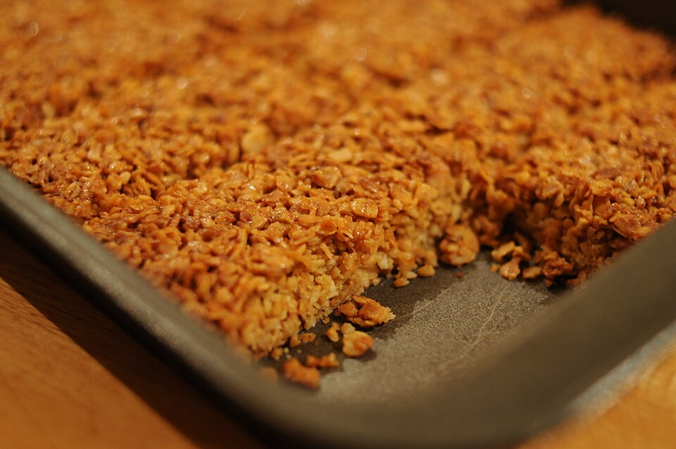

Flapjacks Recipe

This recipe will teach you how to make your very own delicious flapjacks!
This is an easy recipe anyone can master. Prep time is only 15 minutes,
and will take around 30 minutes to cook, and you should have enough batter
to make 10 flapjacks.
Ingredients
- ½ cup butter or margarine
- ½ cup packed brown sugar
- 4 tablespoons golden syrup or corn syrup
- 3 cups rolled oats
Steps
- Pre-heat the oven to 175 degrees C
- In a saucepan over low heat, combine the butter, brown sugar and golden syrup.
Cook, stirring occasionally, until the butter and sugar have melted.
stir in the oats until coated. Pour into a 7 or 8 inch square baking tray.
The mixture should be about 1 inch thick.
- Bake in the oven for 30 minutes, or until golden brown. Cut into rectangles,
then leave to cool before removing from the tray.
Home